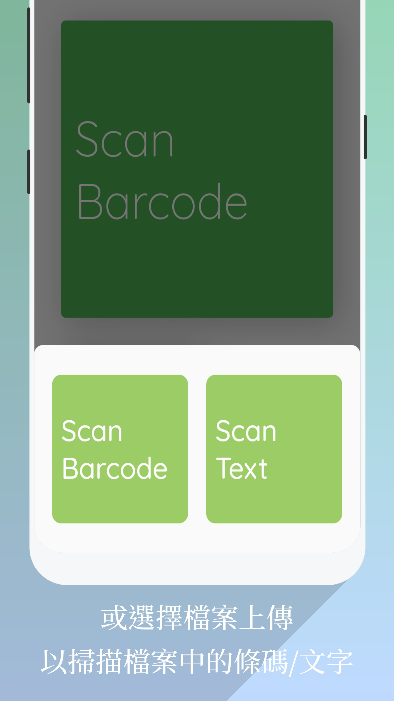

最新版本
直接下載最新版本 v1.0.0 (2019/09/06 釋出)
從Play商店安裝(因為須審核，所以版本更新上可能較慢)
功能簡介
掃條碼 - 即時的條碼掃描
上傳檔案 - 分析檔案中的條碼或文字(文字僅支援拉丁語系)
生成條碼 - 以您的文字內容來生成一個新的QR Code
檢視結果 - 可以複製結果的文字、也可以在瀏覽器中開啟，並支援分享功能
檢視歷史 - 可以查看您所有的歷史結果
設定 - 目前可以切換中、英文版本
螢幕截圖




歷史版本
v1.0.0 (2019/09/06 釋出)
新稱 - 掃條碼
新稱 - 上傳檔案
新稱 - 生成條碼
新稱 - 檢視結果
新稱 - 檢視歷史
新稱 - 設定